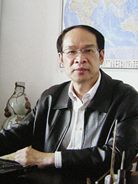
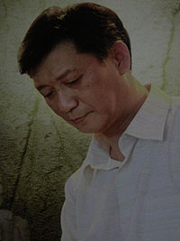

刘忠荣（1958—） 刘忠荣（1958—）上海市人。中国共产党党员。中国工艺美术大师，上海市工艺美术大师，中国玉石雕刻大师，上海非物质遗产海派玉雕代表性传承人。1975年毕业于上海玉石雕刻厂工业中学，在上海玉石雕刻厂炉瓶车间跟随老艺术家刘纪松学艺。1979年创作“翡翠百佛炉”被日本国立横滨博物馆收藏。1984年创作的“青玉兽面壶”被评为国家文物级珍品。1985年后连续三届荣获上海市劳动模范称号，并被命名为“上海十大青年技术精英”之一。 擅长单纯的刀法，主线分明，刚柔相济，深浅互间。浮雕层次丰富，尤其是玉牌创作中开创的六面围雕，凸现令人惊叹的气韵和生命力，工艺精美绝伦，已臻登峰造极之境。 2012年6月应第二届中、日、韩名家艺术邀请展组委会邀请， 代表中国将其三件作品参展。 作品屡获大奖。  吴德昇（1961—） 吴德昇（1961—）上海市人，中国工艺美术大师，上海市工艺美术大师，中国玉石雕刻大师,上海非物质遗产海派玉雕代表性传承人。1978年毕业于上海玉石雕刻厂工业中学，并进入上海玉雕厂人件车间工作。1993年成立吴德昇玉雕艺术工作室。创作题材丰富，尤以人物立体件见长，注重创新与探索， 作品沉稳大气、古朴灵动，善用俏色巧雕，人物比例虽较为夸张但极为生动，具有体积感，富有张力，且结构准确， 层次分明，生动的形象让人印象深刻。被誉为“罗汉三杰”之首。 设计上应顺玉料形状，内质变化，依形构思；制作上往往不受材料的限制，充分发挥玉雕透、中、浅雕工艺，在玉质体积感展现上更显功力。尤其擅长罗汉、美女、鬼斧等，作品屡获获大奖。 袁新根（1954—）
上海市人。上海市工艺美术大师，上海工艺美术学会玉文化专业委员会委员，上海特级玉石雕刻大师、中国玉雕艺术大师、上海非物质文化遗产项目代表性传承人。1971年进入上海玉石雕刻厂，师从工艺美术师孙英德学艺。1972年创作的《各色彩玉仿宋十八般兵器》为畅销产品。先后参加上海工艺美术公司专业设计人员理论进修班，上海工艺美术职业学院深造。1980年在河南焦作第二届全国玉石雕刻操作技术比赛中，荣获全国花鸟比赛第一名。被誉为“花鸟之王”、“巧雕大师”。作品构思巧妙，形象生动，雕琢精美，多次获奖，并屡次在国际大型艺术品拍卖会高价成交，得到了“鱼鸟三圣”之首的美誉。 庞建新
中国国家艺术大师，中华玉雕艺术大师，上海海派玉雕大师，上海玉石雕刻大师，国家一级高级技师，上海海派玉雕文化协会理事，上海市非物质文化遗产项目代表性传承人。上海工艺美术职业学院玉雕专业指导委员会会员。 长期从事玉雕创作设计和制作实践，培养年轻一代，其作品在全国玉雕大赛中得到金奖、银奖等。
林倩为
国家高级工艺师，上海玉石雕刻大师，同济大学中澳学院、高等技术学院、同科学院客座教授，上海工艺美术职业学院玉雕专业指导委员会会员。 长期从事玉雕工艺教学及玉雕创作设计和制作实践，在全国玉雕大赛中得到金奖、银奖等。 冯碧荣
上海玉石雕刻大师,国家一级高级技师,上海金城文物艺术学 院特聘教授，上海工艺美术职业学院玉雕专业指导委员会会员。 长期从事玉雕工艺教学及玉雕创作设计和制作实践，在全国玉雕大赛中得到金奖、银奖等。 |